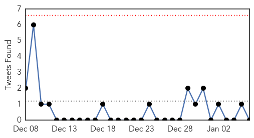

30 Day Trends
Web: 0 alerts, 0 warnings
Twitter: 0 alerts, 0 warnings
Top Articles:
- 0.999
- NC flu update comes as cases spread
- 0.998
- CDC: Flu season continues to worsen, could peak this month
- 0.996
- The flu is getting worse
- 0.996
- Athens hospitals offer tips for avoiding, handling the flu
- 0.995
- Flu cases continue to increase in North Carolina
- 0.992
- Think you have the flu? Here's when to see a doctor
- 0.990
- Flu season expected to peak this month
- 0.987
- Flu cases continue to rise locally, statewide
- 0.983
- Hospital ER flooded with flu patients, statewide deaths rising
- 0.952
- Hunterdon Medical Center restricting children from visiting patients during flu season
- 0.951
- Let’s just make the flu illegal!
- 0.922
- Flu not widespread in Oregon; worst may be yet to come
- 0.917
- Chicago Tribune
- 0.917
- Chicago Tribune
- 0.917
- Chicago Tribune
- 0.917
- Chicago Tribune
- 0.917
- Chicago Tribune
- 0.917
- Chicago Tribune
- 0.917
- Chicago Tribune
- 0.917
- Chicago Tribune
- 0.917
- Chicago Tribune
- 0.917
- Chicago Tribune
- 0.917
- Chicago Tribune
- 0.917
- Chicago Tribune
- 0.917
- Chicago Tribune
- 0.917
- Chicago Tribune
- 0.917
- Chicago Tribune
- 0.917
- Chicago Tribune
- 0.917
- Chicago Tribune
- 0.917
- Chicago Tribune
- 0.917
- Chicago Tribune
- 0.917
- Chicago Tribune
- 0.917
- Chicago Tribune
- 0.917
- Chicago Tribune
- 0.917
- Chicago Tribune
- 0.917
- Chicago Tribune
- 0.910
- The world windows to Thailand
- 0.910
- The world windows to Thailand
- 0.906
- Flu labeled as 'widespread' in Connecticut
- 0.905
- West Virginia education, health officials stress importance of flu shots for students
- 0.902
- New York City Mandates Flu Shots for Toddlers Even After Centers for Disease Control (CDC) Admits They Don’t Work
- 0.896
- Samar health authorities raise alert after suspected meningococcemia kills 2
- 0.887
- Schools Prepare for Flu Spike as Kids Come Back to School
- 0.884
- Flu in American Samoa hits schools
- 0.882
- Flu activity rampant nationwide
- 0.878
- Flu hits East Tennessee hard, Knoxville among sickest cities in the nation
- 0.875
- Doctors Urge Parents: Keep Sick Kids at Home
- 0.866
- Hamas denies leader has been expelled from Qatar
- 0.861
- Flu Numbers on the Rise in Central Illinois - Story
- 0.833
- Flu most intense in years
Showing top 50 articles...
Top Tweets:
- 0.562
- Did you know? If you get fluvax and still get the flu, a flu vaccine may make your illness milder. http://t.co/tyeQwoEu3I
Web/News Articles

Tweets
Article Locations
Article Confidences